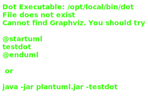

Type parameters
Type: IArangoIndexes
An interface for the data managed by this collection.
Hierarchy-Diagram
{kind=link}
Legend
 class
class
 abstract class
abstract class
 public property
public property
 protected property
protected property
 private property
private property
 public method
public method
 protected method
protected method
 private method
private method
Hierarchy
- IErrorable
- ArangoCollectionWrapper
Index
Constructors
Properties
Methods
- as
Id - as
Key - assert
Id Exists - assert
Key Exists - build
Get All Query - delete
Orphans - error
- exists
- exists
Unsafe - filter
Field - generateDBID
- get
- get
All - get
All Build Filter Key - get
All Count - get
All Not Equal - get
All Return Query - get
From Ids - get
Many Field - get
Many Field With Id - get
Many Fields - get
Not Equal - get
One Field - get
One Fields - get
Unsafe - internal
- isDBId
- is
Key Or Id - key
Exists - key
To Id - raw
Query - remove
- remove
From Field Array - remove
Unsafe - run
Get All Query - save
- save
Unsafe - try
Exists - try
Key Exists - union
Many Field - update
- update
Faster - update
Filter Faster - update
Many Faster - update
Unsafe
Constructors
constructor
Builds the collection manager from its string name and field data.
Type parameters
Type: IArangoIndexes
Parameters
dbName: string
The collection name
fields: [string, IFieldData][]
An array of field data to use to build the return query
Returns ArangoCollectionWrapper<Type>
Properties
class
Protected collection
Protected get
An AQL query representing the fields that should be return from a GET-ALL request.
Private id
Regular Expression used to validate if a string as an ID for this collection
Static Protected Database
Methods
as
Converts an id or a key into an
ID.Parameters
idOrKey: string
The string to convert
Returns string
An
IDfor this collection
as
Converts an id or a key into a
KEY.Parameters
idOrKey: string
The string to convert
Returns string
A
KEY
assert
Asserts that the passed
IDexists in this collection.Parameters
id: string
An
IDto check
Returns Promise<void>
assert
Asserts that the passed
keyexists in this collection. Also converts it into anID.Parameters
key: string
A
KEYto check
Returns Promise<string>
keyas anID
Protected build
Generates a query that performs filtering, sorting, and offsets on the entire collection. This accepts several options which are typically prepared from the request query.
The return fields are specified by the fields passed in the constructor.
Parameters
sort: ISortOpts
Sorting key and direction
offset: number
The number of documents to use as an offset
count: number
The maximum number of documents to return
filters: IFilterOpts[]
All of the filters to apply to the query
justIds: boolean
True if this query should return only database
IDsraw: boolean
True if this query should return the raw documents
Returns GeneratedAqlQuery
An AQL query for the passed options
delete
Filters documents with parent fields that cannot be properly dereferenced ie.
DOCUMENT(d.parent) === nulland deletes them.Parameters
parentFieldLocal: string
The parent key in this document to check
Returns Promise<ArrayCursor<any>>
error
Creates a standard error.
Parameters
fn: string
The function that caused the error
status: HTTPStatus
The status code
Optional message: string
Client-safe error message
Optional verbose: string
Full error message for administrators
Returns APIError
An APIError
exists
Checks if the passed
IDis in this collection but throws errors.Parameters
id: string
A database
IDto check
Returns Promise<boolean>
True if the document exists, false otherwise
Private exists
Check if the id exists in the collection.
Parameters
id: string
An ID for this collection
Returns Promise<boolean>
A Promise that resolves true if the document exists
filter
Returns an array of
IDs that DO match the passed filter.Parameters
ids: string[]
An array of
IDs to filter withkey: string
Key to filter on
equals: string
The filter value to compare against with
==
Returns Promise<ArrayCursor<string>>
A cursor of
IDs that match the filter
generateDBID
Generates a DB
IDfor this collection.Returns string
An
IDwhere theyKEYsection is a url-safe base-64 UUID.
get
Returns the raw document specified by the
idfield.Parameters
id: string
An
IDto retrieve
Returns Promise<Type>
A raw document (without internal _ fields and with a
KEY.id field)
get
Returns all documents in the collection.
Parameters
Optional opts: QueryOptions
Optional AQL query options to use for the query
Returns Promise<ArrayCursor<any>>
A cursor with all of the documents in the query
Protected get
Converts a filter into its document key.
Parameters
filter: IFilterOpts
The filter to parse
Returns GeneratedAqlQuery
An AQL string to use for filtering
get
Gets the number of elements returned by the query.
Parameters
opts: IQueryOpts
All of the query options
Returns Promise<number>
The number of elements in the query
get
Returns an array of
IDs that DO NOT match ANY of the passed values of the filter. To assert that all of the passedIDs match,cursor.hasNextshould befalse.Parameters
ids: string[]
An array of
IDs to filter withkey: string
Key to filter on
equals: string[]
An array of values to filter against
Returns Promise<ArrayCursor<string>>
Protected get
Appends the return segment to the query.
Parameters
query: GeneratedAqlQuery
An AQL query to append to
Returns GeneratedAqlQuery
The finalized query
get
Returns all of the raw documents that are in the array of
IDs. DOES NOT SET.idOR CLEAR_FIELDSParameters
ids: string[]
An array of
IDs to return
Returns Promise<ArrayCursor<Type>>
A cursor with all of the raw documents
get
Gets a single key off each document referenced by
ids. The ordering of the return values cannot be guaranteed to map directly to the passedids.Type parameters
T
The type of
doc.ret. This affects the return type of the cursor.
Parameters
ids: string[]
An array of
IDs to return values fromret: string
A key of Type to return
Returns Promise<ArrayCursor<T>>
A cursor that returns the values
get
Gets a single key and its document's
IDfrom each document referenced byids. This should be used if mapping a value with its document'sIDis important.Type parameters
T
The type of
doc.ret. This affects the return type of the cursor.
Parameters
ids: string[]
An array of
IDs to return values fromret: string
A key of Type to return
Returns Promise<ArrayCursor<{ id: string; v: T }>>
A cursor that returns an id+value object representing the document
IDand value ofdoc.ret
get
Gets multiple key values and their respective document's
IDfield from the passed array ofIDs.Type parameters
A
the type of
doc.aB
the type of
doc.b
Parameters
ids: string[]
An array of
IDs to return values fora: string
The first key to return
b: string
The second key to return
Returns Promise<ArrayCursor<{ a: A; b: B; id: string }>>
A cursor of objects containing the
aandbvalues alongside theirID
get
Returns an array of
IDs that DO NOT match the passed filter. To assert that all of the passedIDs match,cursor.hasNextshould befalse.Parameters
ids: string[]
An array of
IDs to filter withkey: string
Key to filter on
equals: string
The filter value to compare against with
==
Returns Promise<ArrayCursor<string>>
A cursor of
IDs that do not match the filter
get
Gets a single key off a single document. Returns the value directly.
Type parameters
T
The type of
doc.ret
Parameters
id: string
An
IDto retrieve data forret: string
The key of Type to return
Returns Promise<T>
DOCUMENT(id).ret
get
Returns multiple fields from a single document.
Type parameters
A
The type of
a's valueB
The type of
b's value
Parameters
id: string
An
IDto checka: string
A key of Type to return
b: string
A key of Type to return
Returns Promise<{ a: A; b: B }>
An object with an
aandbfield coresponding to the two keys passed asaandb
Private get
Return a document from its ID
Parameters
id: string
An ID for this collection
Returns Promise<Type>
A raw document from the database matching the ID.
internal
Creates a internal error. Uses a static client-safe message.
Parameters
fn: string
The function that caused the error
Optional verbose: string
Full error message for administrators
Returns APIError
An APIError
isDBId
Returns true if this looks like an
IDfor this collectionParameters
id: string
A string to test
Returns boolean
true if the string matches the ID regex
is
Returns true if the passed string is a
KEYor anIDParameters
idOrKey: string
A string
Returns boolean
True if idOrKey is either a
KEYor anIDfor this collection.
key
Checks if the passed
KEYis in this collection but throws errors.Parameters
key: string
A
KEYto check
Returns Promise<boolean>
True if the document exists, false otherwise
key
Converts a key to an ID. Does not perform input checking.
Parameters
key: string
A
KEY
Returns string
An
IDfor this collection
raw
Runs the passed AQL query. This should be used sparingly.
Parameters
aql: GeneratedAqlQuery
An AQL query to run
Returns Promise<ArrayCursor<any>>
remove
Deletes the passed
IDfrom the databaseParameters
id: string
An
IDfor this collection
Returns Promise<void>
remove
Removes the passed value from any arrays in the documents referenced by
ids.Parameters
ids: string[]
The
IDs to updatekey: string
The key of Type that is an array to remove elements from
value: any
The value to remove from the arrays
Returns Promise<ArrayCursor<any>>
Private remove
Removes the passed ID from the database.
Parameters
id: string
A valid ID for this collection
Returns Promise<void>
run
Runs a get-all query with the passed options, returning the queried elements and the query's size.
Parameters
opts: IQueryOpts
All of the query options
Returns Promise<{ cursor: ArrayCursor<any>; size: number }>
cursor The cursor containing the elements in the array
save
Saves the passed document in the database. Requires a
.idfield as anIDorKEY. The parameterdocshould be considered unusable after calling this function.Parameters
doc: Type
A document to save in the database
Returns Promise<DocumentMetadata & { new?: Document<Type> }>
The new document's document handle
Private save
Save a document in the database.
doc._keyis the collection primary key for upload.Parameters
doc: Type
A document for this collection
Returns Promise<DocumentMetadata & { new?: Document<Type> }>
try
Checks if the passed
IDis in this collection.Parameters
id: string
A database
IDto check
Returns Promise<boolean>
True if the document exists, false if the string is not an
IDor if the document does not exist
try
Checks if the passed
KEYis in this collection.Parameters
key: string
A
KEYto check
Returns Promise<boolean>
True if the document exists, false if the string is not a
KEYor if the document does not exist
union
Performs UNION_DISTINCT operation on all
doc.{key}fields for the passed array ofIDs.Parameters
ids: string[]
The
IDs to updatekey: string
The array key of Type to union against
array: any[]
The array to union with
Returns Promise<ArrayCursor<any>>
update
Updates the document in the database with the passed fields. Not that this does not replace an existing document. Deletion of fields requires setting that field to
null. The parameterdocshould be considered unusable after calling this function.Parameters
doc: Type
A document to use as an update. This should have a
.idor._keyfield with the document reference to update.
Returns Promise<DocumentMetadata & { new?: Document<Type>; old?: Document<Type> }>
update
Sets
DOCUMENT(id).key = valueParameters
id: string
An
IDto updatekey: string
The key of the document to update
value: any
The value to set the key to
Returns Promise<ArrayCursor<any>>
update
Updates all documents in this collection that pass a simple == filter with the passed value and returns the
IDs that were updated.Parameters
fKey: string
The filtering key
fEq: any
The filtering value to compare against
key: string
The document key to update
value: any
The value to set the key to
Returns Promise<ArrayCursor<string>>
An ArrayCursor of all updated ids. Documents that already have the value set are not returned.
update
Updates all of the
idswithdocument(id)[key] = valueParameters
ids: string[]
An array of
IDs to updatekey: string
A key in the document to update
value: any
The value to set the key to.
Returns Promise<ArrayCursor<any>>
Private update
Updates the passed collection with the passed data. Uses the doc._key value to check what document to update.
Parameters
doc: Type
An update document
opt: CollectionUpdateOptions
A set of update options
Returns Promise<DocumentMetadata & { new?: Document<Type>; old?: Document<Type> }>
A wrapper for ArangoJS function calls to avoid directly using AQL syntax. This was done to more easily facilitate switching underlying database architecture.
The database configuration is established by config.ts.
Each ArangoWrapper instance manages a single collection in the database. Some functions run independent of the collection, but should always be associated with the data they are using.
Extends IErrorable to provide cleaner error handling.
Note:
IDs are in the form[collection]/[KEY], whileKEYs lack the[collection]prefix.IDs are required for internal document relations butKEYs are more useful for the frontend (the collection prefix makes filtering and/:idroutes more difficult).